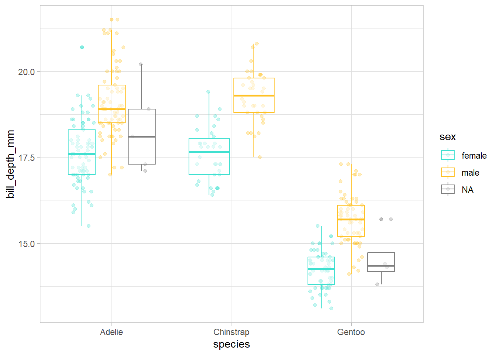
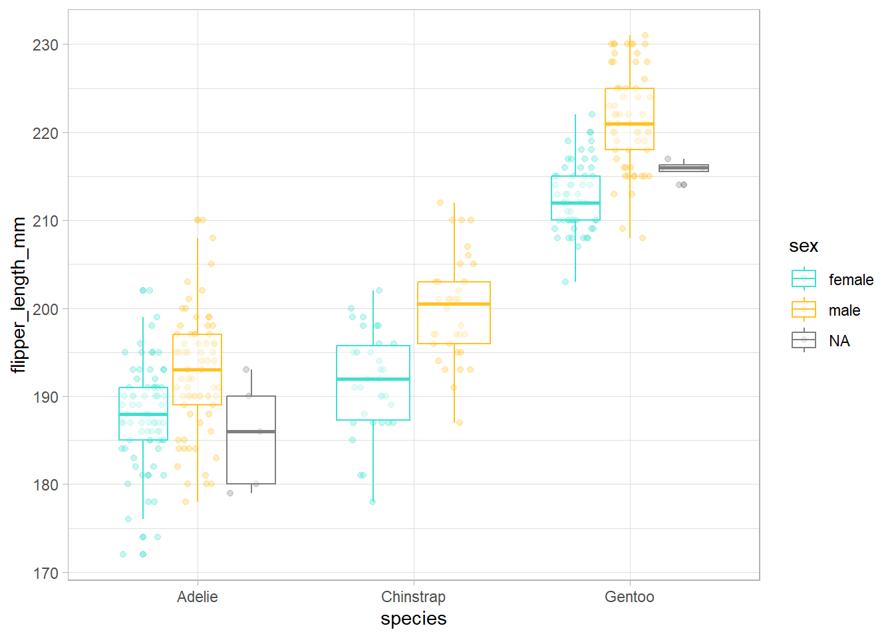
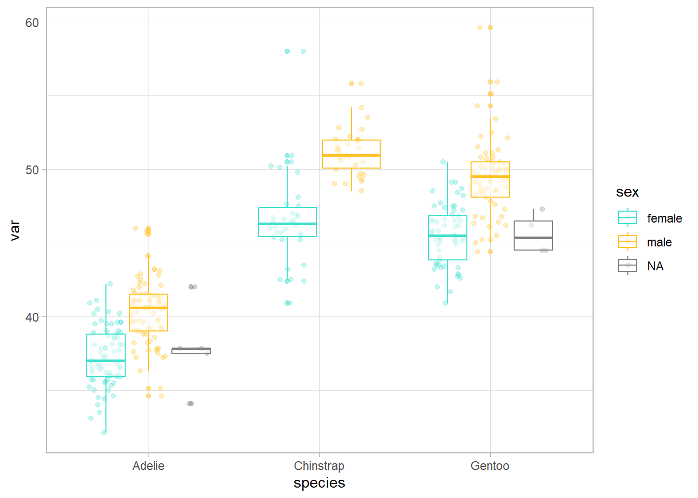
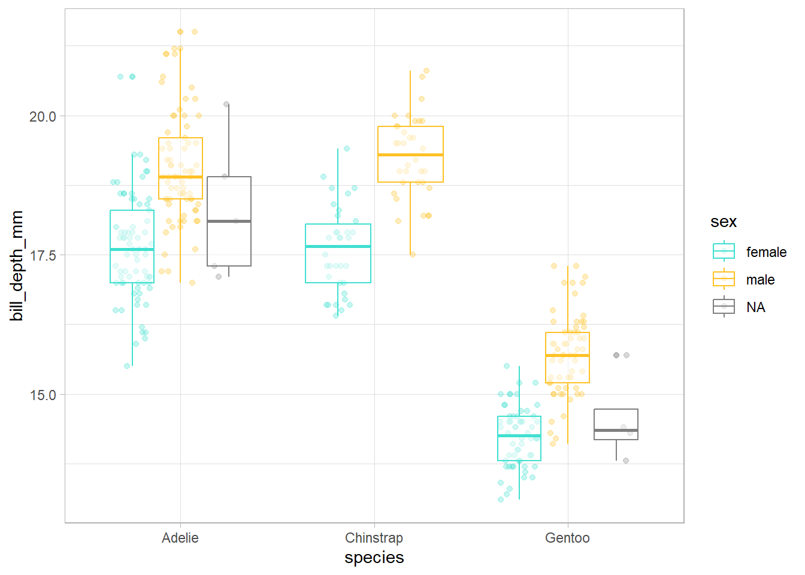
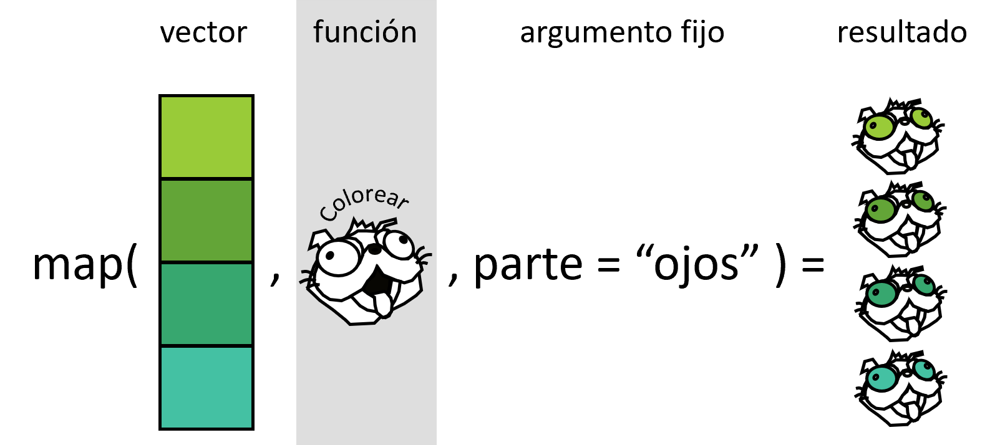

# install.packages("palmerpenguins")
library(palmerpenguins)
library(tidyverse)
df <- penguins |>
select(bill_length_mm, bill_depth_mm, flipper_length_mm, body_mass_g)
df_rescaled1 <- df |>
mutate(bill_length_mm = (bill_length_mm - min(bill_length_mm, na.rm = TRUE)) / (max(bill_length_mm, na.rm = TRUE) - min(bill_length_mm, na.rm = TRUE)),
bill_depth_mm = (bill_depth_mm - min(bill_depth_mm, na.rm = TRUE)) / (max(bill_depth_mm, na.rm = TRUE) - min(bill_length_mm, na.rm = TRUE)),
flipper_length_mm = (flipper_length_mm - min(flipper_length_mm, na.rm = TRUE)) / (max(flipper_length_mm, na.rm = TRUE) - min(flipper_length_mm, na.rm = TRUE)),
body_mass_g = (body_mass_g - min(body_mass_g, na.rm = TRUE)) / (max(body_mass_g, na.rm = TRUE) - min(body_mass_g, na.rm = TRUE)))
View(df_rescaled1)
#
rescale01 <- function(x) {
rng <- range(x, na.rm = TRUE)
(x - rng[1]) / (rng[2] - rng[1])
}
df_rescaled2 <- df |>
mutate(bill_length_mm = rescale01(bill_length_mm),
bill_depth_mm = rescale01(bill_depth_mm),
flipper_length_mm = rescale01(flipper_length_mm),
body_mass_g = rescale01(body_mass_g))
View(df_rescaled2)
#
df_rescaled3 <- lapply(df, rescale01)
View(df_rescaled3)Ciencia de datos en R 
Programación: aprendiendo a programar con funciones
1 Objetivos del día 3
Los objetivos del día de hoy son:
aprender a escribir funciones
aplicar funciones en programación iterativa mediante el paquete {purrr} de {tidyverse}
Dentro del modelo de ciencia de datos de Hadley Wickham, Mine Çetinkaya-Rundel y Garrett Grolemund (Figure 1), el día de hoy se centra en el marco que envuelve todo el proceso, es decir, la programación.

2 Introducción a la programación funcional
La creciente disponibilidad de datos y de versatilidad de los programas de análisis han provocado el incremento en la cantidad y complejidad de los análisis que realizamos. Esto hace cada vez más necesaria la eficiencia en el proceso de gestión y análisis de datos. Una de las posibles formas para optimizar estos procesos y acortar los tiempos de trabajo para los usuarios de R es la programación basada en funciones. Las funciones permiten automatizar tareas comunes (por ejemplo, leer diferentes bases de datos) simplificando el código.
Como las funciones en R son objetos, es posible llamarlas a través de otras funciones e iterar este proceso, lo que constituye la base de la programación funcional y convierte a R en una herramienta muy poderosa. Las iteraciones sirven para realizar la misma acción a múltiples entradas.
Las principales ventajas de la programación funcional (uso de funciones e iteraciones) son:
- Facilidad para ver la intención del código y, por tanto, mejorar la comprensión para uno mismo, colaboradores y revisores:
- Las funciones tienen un nombre evocativo.
- El código queda más ordenado.
- Rapidez si se necesitan hacer cambios ya que las funciones son piezas independientes que resuelven un problema concreto.
- Disminuye la probabilidad de error.
2.1 ¿Cuándo hay que usar una función?
Se recomienda seguir el principio “do not repeat yourself” (DRY principle): cada unidad de conocimiento o información debe tener una representación única, inequívoca y autoritativa en un sistema.
Escribir una función ya merece la pena cuando has copiado y pegado más de dos veces lo mismo (don’t be WET! - Write Everything Twice). Cuantas más veces esté repetido un código, en más sitios necesitarás actualizarlo si hay algun cambio y más aumenta la probabilidad de error.
3 Teoría sobre funciones en R
Según el tipo de output generado hay dos tipos de funciones:
Las funciones de transformación transforman el objeto que entra en la función (primer argumento) y devuelven otro objeto o el anterior modificado. Los funcionales son tipos especiales de funciones de transformación.

Las funciones secundarias (side-effect functions) tienen efectos colaterales y ejecutan una acción, como guardar un archivo o dibujar un plot. Algunos ejemplos de funciones secundarias que se usan comunmente son:
library(),setwd(),plot(),write_delim()… Estas funciones retornan de forma invisible el primer argumento, que no se guarda, pero puede ser usado en un pipeline.
En general, sintácticamente, las funciones tienen tres componentes:
- Función
function()(primitiva) - Argumentos: lista de entradas.
- Cuerpo: trozo de código que sigue a
function(), tradicionalmente entre llaves.
nombre1_v1 <- function(x, y) {
paste(x, y, sep = "_")
}
nombre1_v2 <- function(x, y) paste(x, y, sep = "_")
nombre1_v3 <- \(x, y) paste(x, y, sep = "_")
nombre1_v1("Vero", "Cruz") [1] "Vero_Cruz"nombre1_v2("Vero", "Cruz") [1] "Vero_Cruz"nombre1_v3("Vero", "Cruz") [1] "Vero_Cruz"üìù Si la funci√≥n tiene más de dos lineas es mejor usar llaves siempre para que quede bien delimitada. La llave de apertura nunca debe ir sola pero s√≠ la de cierre (excepto con else). Las sangr√≠as tambi√©n ayudan mucho a entender la jerarqu√≠a del c√≥digo dentro de las funciones.
En general las funciones tienen un nombre que se ejecuta cuando se necesita como hemos visto hasta ahora, pero esto no es obligatorio. Algunos paquetes como {purrr} o las funciones de la familia apply permiten el uso de funciones anónimas para iterar.
map(penguins, function(x) length(unique(x)))$species
[1] 3
$island
[1] 3
$bill_length_mm
[1] 165
$bill_depth_mm
[1] 81
$flipper_length_mm
[1] 56
$body_mass_g
[1] 95
$sex
[1] 3
$year
[1] 3penguins |>
map(function(x) length(unique(x)))$species
[1] 3
$island
[1] 3
$bill_length_mm
[1] 165
$bill_depth_mm
[1] 81
$flipper_length_mm
[1] 56
$body_mass_g
[1] 95
$sex
[1] 3
$year
[1] 3üìù Mejor reservar el uso de funciones an√≥nimas para funciones cortas y simples. Si la funci√≥n es larga, ocupa varias l√≠neas o tenemos que usarla con frecuencia mejor darle un nombre.
4 Cómo escribir funciones
4.0.1 Ejercicio
Genera tu primera función que divida un valor siempre entre 100.
üí°Atajo para escribir funciones: escribir la palabra fun + tabulador
Imaginad que para un set de datos quisieramos hacer un gráfico de distribución de cada variable numérica, en función de otra variable categórica que nos interese especialmente, para ver cómo se distribuye.
penguins_num <- penguins |>
select(species, sex, where(is.numeric))
# nos interesan las diferencias entre especie y sexo
ggplot(penguins_num, aes(x = species, y = bill_length_mm, color = sex)) +
geom_point(position = position_jitterdodge(), alpha = 0.3) +
geom_boxplot(alpha = 0.5) +
scale_color_manual(values = c("turquoise", "goldenrod1")) +
theme_light()ggplot(penguins_num, aes(x = species, y = bill_depth_mm, color = sex)) +
geom_point(position = position_jitterdodge(), alpha = 0.3) +
geom_boxplot(alpha = 0.5) +
scale_color_manual(values = c("turquoise", "goldenrod1")) +
theme_light()
ggplot(penguins_num, aes(x = species, y = flipper_length_mm, color = sex)) +
geom_point(position = position_jitterdodge(), alpha = 0.3) +
geom_boxplot(alpha = 0.5) +
scale_color_manual(values = c("turquoise", "goldenrod1")) +
theme_light()
# etcHemos copiado un código más de dos veces para realizar una misma acción (es decir, un gráfico para ver como se distribuye una variable en función de otras dos que se mantienen constantes) así que hay que considerar la posibilidad de que estemos necesitando una función. A continuación vamos a seguir unos sencillos pasos para transformar cualquier código repetido en función.
Analizar el código: ¿cuáles son las partes replicadas? ¿cuantas entradas tenemos? ¿cuáles varían y cuáles no?
Simplificar y reanalizar duplicaciones
var <- penguins_num$bill_length_mm
ggplot(penguins_num, aes(x = species, y = var, color = sex)) +
geom_point(position = position_jitterdodge(), alpha = 0.3) +
geom_boxplot(alpha = 0.5) +
scale_color_manual(values = c("turquoise", "goldenrod1")) +
theme_light()
var <- body_mass_gError in eval(expr, envir, enclos): object 'body_mass_g' not foundvar <- "body_mass_g"
ggplot(penguins_num, aes(x = species, y = var, color = sex)) +
geom_point(position = position_jitterdodge(), alpha = 0.3) +
geom_boxplot(alpha = 0.5) +
scale_color_manual(values = c("turquoise", "goldenrod1")) +
theme_light() +
ylab(var) # grafico erroneoggplot(penguins_num, aes(x = species, y = .data[[var]], color = sex)) +
geom_point(position = position_jitterdodge(), alpha = 0.3) +
geom_boxplot(alpha = 0.5) +
scale_color_manual(values = c("turquoise", "goldenrod1")) +
theme_light() +
ylab(var) # grafico correctoüëÄ La funci√≥n ggplot necesita argumentos (data-variable) que est√©n dentro del data.frame que va a representar. Para poder generalizar la funci√≥n hemos guardado el nombre de la variable en un objeto (tipo character), pero ggplot no acepta characters. Por ello necesitamos utilizar una funci√≥n intermedia que s√≠ los acepte. Para resolver problemas comunes de programaci√≥n funcional derivados de la non-standard evaluation de tidyverse mira este enlace.

Elegir un nombre para la funci√≥n (üìù). Idealmente tiene que ser corto y evocar lo que la funci√≥n hace. En general, debe ser un verbo (p. ej. imputar_valores) mientras que los argumentos son sustantivos (p. ej. data, variable, etc.). Usar un sustantivo para una funci√≥n está permitido si la funci√≥n calcula algo muy conocido (p. ej.
mean()) o si sirve para acceder a partes de un objeto (p. ej.residuals()). También se recomienda evitar verbos muy genéricos (p. ej. calcular) y si el nombre tiene varias palabras separarlas con guión bajo o mayúsculas, pero ser consistente. Si programas varias funciones que hacen cosas parecidas se recomienda usar el mismo prefijo para todas (p. ej. “str_” en el paquete {stringr}).Enumerar los argumentos dentro de
function()y poner el código simplificado dentro de las llaves.
explorar_penguins <- function (var) {
ggplot(penguins_num, aes(x = species, y = .data[[var]], color = sex)) +
geom_point(position = position_jitterdodge(), alpha = 0.3) +
geom_boxplot(alpha = 0.5) +
scale_color_manual(values = c("turquoise", "goldenrod1")) +
theme_light() +
ylab(var)
}üìù Utiliza comentarios (#) para explicar el razonamiento detrás de tus funciones. Se debe evitar explicar qu√© se está haciendo o c√≥mo, ya que el propio c√≥digo ya lo comunica. Tambi√©n se recomienda usar # para separar apartados (Cmd/Ctrl + Shift + R).
- Probar con entradas diferentes
explorar_penguins(var = "body_mass_g") Warning: Removed 2 rows containing non-finite outside the scale range
(`stat_boxplot()`).Warning: Removed 2 rows containing missing values or values outside the scale range
(`geom_point()`).explorar_penguins(var = "flipper_length_mm") Warning: Removed 2 rows containing non-finite outside the scale range
(`stat_boxplot()`).
Removed 2 rows containing missing values or values outside the scale range
(`geom_point()`).explorar_penguins(var = "bill_depth_mm")Warning: Removed 2 rows containing non-finite outside the scale range
(`stat_boxplot()`).
Removed 2 rows containing missing values or values outside the scale range
(`geom_point()`).
4.0.2 Ejercicio
Genera una función para estandarizar (es decir, restar la media y dividir por la desviación típica) las variables numéricas de penguins.
4.1 Argumentos
En general hay dos grupos: los que especifican los datos y los que especifican detalles de la ejecución de la función. Normalmente los que especifican datos se colocan primero y los de detalle después. Estos últimos suelen tener valores por defecto (los más comunes), para cuando no se especifique nada.
üìù Los nombres de los argumentos deben ser cortos y descriptivos. Hay algunos comunes pero poco descriptivos que ya son conocidos para la mayor√≠a de los usuarios y está bien aprovecharlos:
x, y, z: vectores
w: vector de pesos
df: data frame
i, j: indices numericos, filas y columnas respectivamente
n: longitud o número de filas
p: numero de columnas
na.rm: valores faltantes
4.2 Valores de retorno
La última expresión ejecutada en una función es el valor de retorno.
üìù La funci√≥n return() se usa para indicar explicitamente qu√© se quiere obtener en una funci√≥n. Se recomienda su uso cuando el retorno no se espera al final de la funci√≥n. P. ej. en las ramas de una estructura if-else, sobre todo cuando hay alguna rama larga y compleja.
5 Iteraciones con bucles for
Los bucles son recomendables para adentrarse en el mundo de las iteraciones porque hacen cada iteración muy explícita para que quede claro lo que está pasando.

Para programar un bucle es necesario definir tres partes diferentes: la salida, la secuencia y el cuerpo.
set.seed(123)
df_ej <- data.frame(
a = sample(1:5),
b = sample(1:5),
c = sample(1:5)
)
salida <- vector("double", 3) # 1. salida
for (i in 1:3) { # 2. secuencia
salida[[i]] <- first(df_ej[[i]]) # 3. cuerpo
}
salida[1] 3 3 2# podriamos generalizar el for
salida <- vector("double", ncol(df_ej)) # 1. salida
for (i in seq_along(df_ej)) { # 2. secuencia
salida[[i]] <- first(df_ej[[i]]) # 3. cuerpo
}
salida[1] 3 3 2# tambien podriamos iterar sobre filas
salida <- vector("double", nrow(df_ej))
for(i in 1:nrow(df_ej)) {
salida[[i]] <- sum(df_ej[i, ])
}
salida[1] 8 6 8 13 10Salida: aquí determinamos el espacio de la salida, es decir, primero tenemos que crear la libreta donde vamos a ir apuntando todos los resultados.
Secuencia: aquí determinamos sobre lo que queremos iterar. Cada ejecución del bucle for asignará un valor diferente de
seq_along(y)ai.Cuerpo: aquí determinamos lo que queremos que haga cada iteración. Se ejecuta repetidamente, cada vez con un valor diferente para
i.
Existe la creencia de que los bucles for son lentos, pero la desventaja real de los bucles for es que son demasiado flexibles y pueden realizar muchas tareas diferentes. En cambio, cada funcional ({purrr}, apply) está diseñado para una tarea específica, por lo que en cuanto lo ves en el código, inmediatamente sabes por qué se está utilizando. Es decir, la principal ventaja es su claridad al hacer que el código sea más fácil de escribir y de leer.
Los bucles pueden ser más explícitos en cuanto a que se ve claramente la iteración, pero se necesita más tiempo para entender qué se está haciendo. Por el contrario, los funcionales necesitan un paso más de abstracción y pueden requerir tiempo hasta que los comprendamos. Lo más importante es que soluciones el problema y poco a poco ir escribiendo código cada vez más sencillo y elegante.
Para ser significativamente más fiable, el código debe ser más transparente. En particular, las condiciones anidadas y los bucles deben considerarse con gran recelo. Las esctructuras de control complicados confunden a los programadores. El código desordenado suele ocultar errores.
— Bjarne Stroustrup (Advanced R)
6 Iteraciones con funcionales

map() donde el foco está en la operación realizada. Ilustración de Allison Horst obtenido de la charla de Hadley Wickham The Joy of Functional Programming (para ciencia de datos)Un funcional es una función que toma una función como entrada y devuelve un vector u otro tipo de objeto como salida.
aleatorizacion <- function(f) {
f(rnorm(5))
}
aleatorizacion(f = median)[1] 0.3598138Para programar un funcional, primero, solucionamos el problema para un elemento. Después, generamos una función que nos permita envolver la solución en una función (como lo hicimos en Section 4). Por último, aplicamos la función a todos los elementos que estamos interesados. Es decir, dividimos los problemas grandes en problemas más pequeños y resolvemos cada tarea con una o más funciones.
En tidyverse se iteran procesos mediante el paquete {purrr}. Comparando los funcionales con los bucles, el foco está en la operación que se está ejecutando, y no en el código necesario para iterar sobre cada elemento y guardar la salida.
map(df_ej, first)$a
[1] 3
$b
[1] 3
$c
[1] 2df_ej |>
map(first)$a
[1] 3
$b
[1] 3
$c
[1] 2salida <- vector("list", length = 3)
for (i in 1:3) {
salida[[i]] <- first(df_ej[[i]])
}
salida[[1]]
[1] 3
[[2]]
[1] 3
[[3]]
[1] 26.1 Nuestro primer funcional: generando listas, map()
map_*() está vectorizado sobre un argumento, p. ej. (x). La función operará en todos los elementos de x, es decir, cada valor si x es un vector, cada columna si x es un data.frame, o cada elemento si x es una lista.
Toma un vector y una función, llama a la función una vez por cada elemento del vector y devuelve los resultados en una lista. map(1:3, f) es equivalente a list(f(1), f(2), f(3)). Es el equivalente de lapply() de R base.
cuadratica <- function(x) {
x ^ 2
}
map_ouput_list <- map(.x = 1:4, .f = cuadratica)
lapply_ouput_list <- lapply(X = 1:4, FUN = cuadratica)
# seleccionar cada elemento de la lista
map_ouput_list[[1]][1] 1map_ouput_list |>
pluck(1)[1] 1# algun uso mas interesante
glimpse(penguins)Rows: 344
Columns: 8
$ species <fct> Adelie, Adelie, Adelie, Adelie, Adelie, Adelie, Adel…
$ island <fct> Torgersen, Torgersen, Torgersen, Torgersen, Torgerse…
$ bill_length_mm <dbl> 39.1, 39.5, 40.3, NA, 36.7, 39.3, 38.9, 39.2, 34.1, …
$ bill_depth_mm <dbl> 18.7, 17.4, 18.0, NA, 19.3, 20.6, 17.8, 19.6, 18.1, …
$ flipper_length_mm <int> 181, 186, 195, NA, 193, 190, 181, 195, 193, 190, 186…
$ body_mass_g <int> 3750, 3800, 3250, NA, 3450, 3650, 3625, 4675, 3475, …
$ sex <fct> male, female, female, NA, female, male, female, male…
$ year <int> 2007, 2007, 2007, 2007, 2007, 2007, 2007, 2007, 2007…# atajo para generar una funcion anonima: \(nombre_del_argumento)
map(.x = penguins, .f = \(x) length(unique(x)))$species
[1] 3
$island
[1] 3
$bill_length_mm
[1] 165
$bill_depth_mm
[1] 81
$flipper_length_mm
[1] 56
$body_mass_g
[1] 95
$sex
[1] 3
$year
[1] 3# salida dataframe
map_df(.x = penguins, .f = \(x) length(unique(x)))# A tibble: 1 × 8
species island bill_length_mm bill_depth_mm flipper_length_mm body_mass_g
<int> <int> <int> <int> <int> <int>
1 3 3 165 81 56 95
# ℹ 2 more variables: sex <int>, year <int>
6.1.1 Ejercicio
Generad un vector, una función y aplicadle la función a cada uno de los elementos del vector utilizando map().
Los argumentos que varían para cada ejecución se ponen antes de la función y los argumentos que son los mismos para cada ejecución se ponen después (p. ej. na.rm = T).

Para incluir argumentos adicionales a la función que estamos utilizando dentro de map(), una opción es decrararlo dentro de la función. Sin embargo, puesto que map() incluye ... entre sus argumentos, también podemos incluir los argumentos adicionales después de la función y dentro de map() de una forma mucho más sencilla. Hay una pequeña diferencia entre incluir argumentos adicionales dentro de una función e incluirlos directamente dentro del map(). Incluirlo en una función significa que se evaluará cada vez que se ejecute la función, pero al incluirlo dentro de map() sólo se evaluará una vez.
6.2 Nuestro segundo funcional: generando vectores, map_*()
6.2.1 Ejercicio
Dedicadle un par de minutos a entender lo que hacen las siguientes funciones:
map_lgl(penguins, is.numeric) species island bill_length_mm bill_depth_mm
FALSE FALSE TRUE TRUE
flipper_length_mm body_mass_g sex year
TRUE TRUE FALSE TRUE penguins_num <- penguins[ , map_lgl(penguins, is.numeric)]
map_dbl(penguins_num, median, na.rm = T) bill_length_mm bill_depth_mm flipper_length_mm body_mass_g
44.45 17.30 197.00 4050.00
year
2008.00 map_chr(penguins, class) species island bill_length_mm bill_depth_mm
"factor" "factor" "numeric" "numeric"
flipper_length_mm body_mass_g sex year
"integer" "integer" "factor" "integer" map_int(penguins, \(x) length(unique(x))) species island bill_length_mm bill_depth_mm
3 3 165 81
flipper_length_mm body_mass_g sex year
56 95 3 3 1:4 |>
map_vec(\(x) as.Date(ISOdate(x + 2024, 09, 25)))[1] "2025-09-25" "2026-09-25" "2027-09-25" "2028-09-25"6.3 Nuestro tercer funcional: dos entradas, map2()
map2() está vectorizado sobre dos argumentos, p. ej. (x, y)
potencia <- function(base, exponente) {
base ^ exponente
}
set.seed(123)
x <- sample(5)
y <- sample(5)
map2(x, y, potencia)[[1]]
[1] 27
[[2]]
[1] 2
[[3]]
[1] 25
[[4]]
[1] 1024
[[5]]
[1] 1⚡¡Importante! La primera iteración corresponde al primer valor del vector x y al primer valor del vector y. La segunda iteración corresponde al segundo valor del vector x y al segundo valor del vector y. No se hacen todas las combinaciones posibles entre ambos vectores.

6.3.1 Ejercicio
A partir del código que se muestra a continuación generad un data.frame, agregando una columna al data.frame con el nombre que le hemos asignado a cada lista.
penguins_list <- penguins |>
group_split(species)
# asignamos nombres a las listas
names(penguins_list) <- c("p1", "p2", "p3")üí°Se puede iterar sobre más de dos entradas con pmap(), iterar cuando no hay un objeto de salida con walk() e iterar sobre √≠ndices con imap(), entre otras opciones.
6.4 Enlaces de interés
Session Info
Sys.time()[1] "2024-09-25 13:58:04 CEST"sessionInfo()R version 4.3.1 (2023-06-16 ucrt)
Platform: x86_64-w64-mingw32/x64 (64-bit)
Running under: Windows 11 x64 (build 22631)
Matrix products: default
locale:
[1] LC_COLLATE=English_United States.utf8
[2] LC_CTYPE=English_United States.utf8
[3] LC_MONETARY=English_United States.utf8
[4] LC_NUMERIC=C
[5] LC_TIME=English_United States.utf8
time zone: Europe/Paris
tzcode source: internal
attached base packages:
[1] stats graphics grDevices utils datasets methods base
other attached packages:
[1] lubridate_1.9.3 forcats_1.0.0 stringr_1.5.1
[4] dplyr_1.1.4 purrr_1.0.2 readr_2.1.5
[7] tidyr_1.3.1 tibble_3.2.1 ggplot2_3.5.0
[10] tidyverse_2.0.0 palmerpenguins_0.1.1
loaded via a namespace (and not attached):
[1] gtable_0.3.4 jsonlite_1.8.8 compiler_4.3.1 tidyselect_1.2.1
[5] scales_1.3.0 yaml_2.3.8 fastmap_1.1.1 R6_2.5.1
[9] labeling_0.4.3 generics_0.1.3 knitr_1.45 htmlwidgets_1.6.4
[13] munsell_0.5.0 pillar_1.9.0 tzdb_0.4.0 rlang_1.1.3
[17] utf8_1.2.4 stringi_1.8.3 xfun_0.42 timechange_0.3.0
[21] cli_3.6.1 withr_3.0.0 magrittr_2.0.3 digest_0.6.35
[25] grid_4.3.1 rstudioapi_0.15.0 hms_1.1.3 lifecycle_1.0.4
[29] vctrs_0.6.5 evaluate_0.23 glue_1.7.0 farver_2.1.1
[33] fansi_1.0.6 colorspace_2.1-0 rmarkdown_2.26 tools_4.3.1
[37] pkgconfig_2.0.3 htmltools_0.5.7